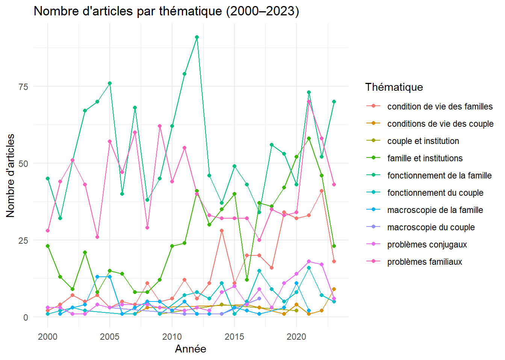
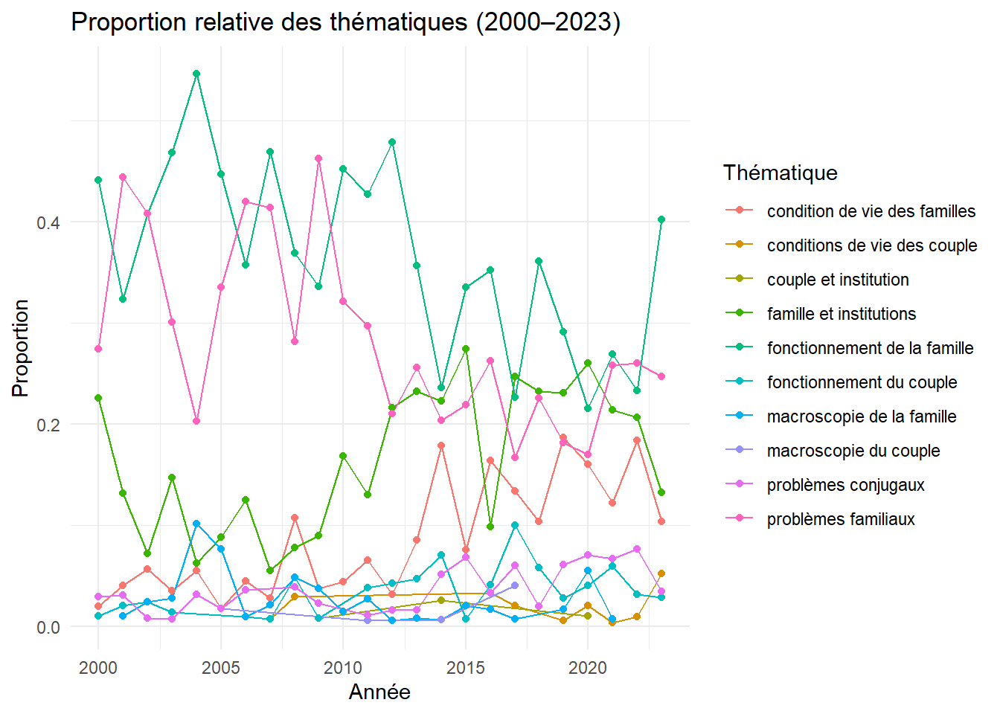
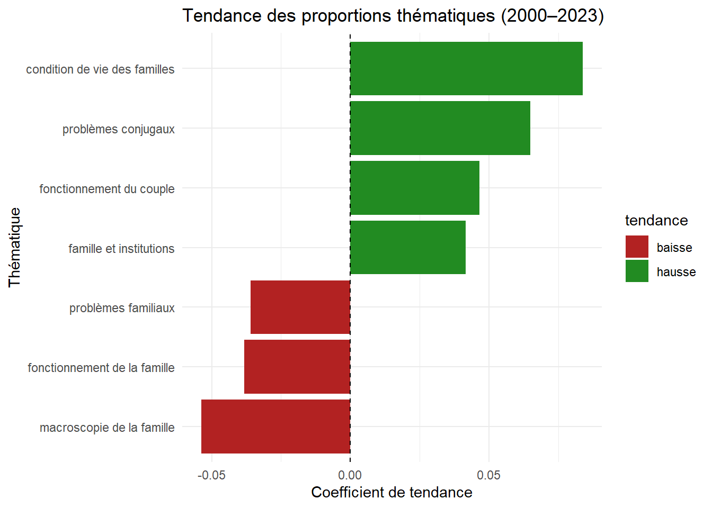

Premier survol de la recherche en psychologie familiale au Québec
Première escale : survol macro de la recherche en psychologie familiale au Québec (2000–2023)
Introduction
Je me suis lancé dans un projet qui me tient à cœur : documenter l’évolution de la recherche en psychologie sur la famille au Québec, à partir des publications recensées dans la base de données Famili@. Dans ce premier billet — qui ouvre une série d’analyses —, je propose un regard macro sur le champ. L’idée ? Commencer large, pour mieux plonger ensuite.
Pourquoi débuter aussi globalement ? Parce que comprendre une dynamique disciplinaire exige d’abord de savoir si la production scientifique elle-même est en croissance, stagnation ou régression. Mais aussi parce que les thématiques proposées par la base Famili@ sont elles-mêmes construites à un niveau macro : elles regroupent les écrits sous de grandes catégories comme fonctionnement du couple, problèmes familiaux, ou familles et institutions. Ces thématiques sont en quelque sorte des balises pour naviguer dans la diversité des objets de recherche liés à la famille.
C’est donc à la fois en regardant le nombre d’articles publiés et la distribution de ces articles à travers les grandes thématiques que j’ai cherché à cerner les grandes tendances de la période 2000 à 2023.
Un mot important : j’ai volontairement exclu les années 2024 et 2025 de l’analyse, car le nombre d’articles y était très faible. Il est fort probable que plusieurs publications récentes n’aient pas encore été intégrées à la base de données, ce qui aurait faussé les résultats.
Méthodes
Les données utilisées proviennent de la base Famili@, qui regroupe les publications scientifiques sur la famille au Québec depuis les années 1980. Je les ai extraites directement du site web, puis nettoyées et restructurées afin de bâtir une base de données adaptée à l’analyse.
Dans cette première phase, mon objectif était de tracer un portrait d’ensemble de la recherche en psychologie familiale au Québec. Pour ce faire, j’ai choisi une stratégie d’analyse en trois temps. J’ai d’abord examiné l’évolution du nombre d’articles publiés chaque année, en recourant à deux modèles statistiques complémentaires : une régression linéaire, pour capturer la tendance générale, et une régression de Poisson, plus adaptée aux données de type comptage.
J’ai poursuivi avec une analyse des thématiques principales associées aux articles. Celles-ci sont définies par la base Famili@ selon un découpage macro, reflétant les grands axes de la recherche sur la famille. J’ai donc examiné d’une part le nombre brut d’articles par thématique et par année, et d’autre part leur poids relatif selon les années.
Pour enrichir cette lecture, j’ai appliqué deux types d’analyses : une régression binomiale pondérée pour détecter les thématiques dont la proportion évolue significativement dans le temps, et un calcul du coefficient de variation (CV) pour estimer leur stabilité ou volatilité d’une année à l’autre.
── Attaching core tidyverse packages ──────────────────────── tidyverse 2.0.0 ──
✔ dplyr 1.1.4 ✔ readr 2.1.5
✔ forcats 1.0.0 ✔ stringr 1.5.1
✔ ggplot2 3.5.1 ✔ tibble 3.2.1
✔ lubridate 1.9.4 ✔ tidyr 1.3.1
✔ purrr 1.0.4
── Conflicts ────────────────────────────────────────── tidyverse_conflicts() ──
✖ dplyr::filter() masks stats::filter()
✖ dplyr::lag() masks stats::lag()
ℹ Use the conflicted package (<http://conflicted.r-lib.org/>) to force all conflicts to become errors
library(broom)library(ggplot2)# Importer les donnéesdf<-read_csv("https://raw.githubusercontent.com/benoitplante/familia/main/database/df_projets_familia_finale.csv")
Rows: 4557 Columns: 8
── Column specification ────────────────────────────────────────────────────────
Delimiter: ","
chr (7): titre_clean, auteurs, thematiques_clean, type_doc_std, mots_cles, m...
dbl (1): annee_extrait
ℹ Use `spec()` to retrieve the full column specification for this data.
ℹ Specify the column types or set `show_col_types = FALSE` to quiet this message.
# Filtrer les données entre 2000 et 2023df_filtered<-df%>%filter(annee_extrait>=2000&annee_extrait<=2023)# Compter le nombre d’articles par annéearticles_per_year<-df_filtered%>%count(annee_extrait, name ="n_articles")# Régression linéairelm_model<-lm(n_articles~annee_extrait, data =articles_per_year)# Régression de Poissonpoisson_model<-glm(n_articles~annee_extrait, family =poisson(), data =articles_per_year)# Prédictions des deux modèlesarticles_per_year<-articles_per_year%>%mutate( pred_lm =predict(lm_model), pred_poisson =predict(poisson_model, type ="response"))# Graphique comparatifarticles_per_year%>%ggplot(aes(x =annee_extrait, y =n_articles))+geom_point(color ="blue")+geom_line(aes(y =pred_lm), color ="red", linetype ="dashed")+geom_line(aes(y =pred_poisson), color ="green")+labs( title ="Évolution du nombre d'articles (2000–2023)", subtitle ="Régression linéaire (rouge pointillé) vs Poisson (vert)", x ="Année", y ="Nombre d'articles")+theme_minimal()
Une croissance nette des publications
L’analyse du nombre d’articles montre une croissance soutenue entre 2000 et 2023. Les deux modèles convergent vers une même conclusion : la production scientifique en psychologie familiale est en expansion, avec une moyenne d’augmentation d’environ 4 articles par an.
# Filtrer les données avec thématiques validesdf_thematiques<-df_filtered%>%filter(!is.na(thematiques_clean))# 1. Tableau du nombre d’articles par thématique et par annéetable_thematiques<-df_thematiques%>%count(annee_extrait, thematiques_clean, name ="n_articles")%>%pivot_wider(names_from =thematiques_clean, values_from =n_articles, values_fill =0)# 2. Graphique du nombre d’articles par thématiquedf_thematiques%>%count(annee_extrait, thematiques_clean)%>%ggplot(aes(x =annee_extrait, y =n, color =thematiques_clean))+geom_line()+geom_point()+labs(title ="Nombre d'articles par thématique (2000–2023)", x ="Année", y ="Nombre d'articles", color ="Thématique")+theme_minimal()

Une diversité de thématiques… inégalement réparties
En explorant les thématiques attribuées aux articles, certaines se démarquent rapidement :
Fonctionnement du couple
Fonctionnement de la famille
Familles et institutions
Problèmes familiaux
Le volume brut confirme leur popularité, mais c’est en examinant les proportions relatives que les choses deviennent intéressantes.
# 3. Calcul des proportions par thématiquedf_prop<-df_thematiques%>%count(annee_extrait, thematiques_clean, name ="n")%>%group_by(annee_extrait)%>%mutate(total =sum(n), proportion =n/total)%>%ungroup()# 4. Graphique des proportions relativesdf_prop%>%ggplot(aes(x =annee_extrait, y =proportion, color =thematiques_clean))+geom_line()+geom_point()+labs(title ="Proportion relative des thématiques (2000–2023)", x ="Année", y ="Proportion", color ="Thématique")+theme_minimal()

# Régression binomiale pondérée par thématiquedf_prop<-df_prop%>%mutate(year_centered =annee_extrait-mean(annee_extrait))results<-df_prop%>%group_by(thematiques_clean)%>%do(tidy(glm(cbind(n, total-n)~year_centered, data =., family ="binomial")))%>%filter(term=="year_centered")%>%mutate(tendance =if_else(estimate>0, "hausse", "baisse"))%>%arrange(p.value)# 5. Graphique des tendances significativesresults%>%filter(p.value<0.05)%>%ggplot(aes(x =estimate, y =reorder(thematiques_clean, estimate), fill =tendance))+geom_col()+geom_vline(xintercept =0, linetype ="dashed")+labs(title ="Tendance des proportions thématiques (2000–2023)", x ="Coefficient de tendance", y ="Thématique")+scale_fill_manual(values =c("hausse"="forestgreen", "baisse"="firebrick"))+theme_minimal()

Des tendances thématiques marquées
Grâce à une régression binomiale pondérée, j’ai identifié plusieurs thématiques dont la proportion relative a significativement augmenté dans le corpus :
Fonctionnement de la famille
Familles et institutions
Conditions de vie des familles
Cela suggère un recentrage de la recherche sur des enjeux concrets et institutionnels, peut-être en lien avec les transformations des politiques familiales, les services à la petite enfance, ou encore la médicalisation du champ familial.
# ---- Analyse de stabilité des thématiques ----# Calcul du coefficient de variation (CV) par thématiquevolatilite_thematiques<-df_prop%>%group_by(thematiques_clean)%>%summarise( moyenne_prop =mean(proportion, na.rm =TRUE), ecart_type_prop =sd(proportion, na.rm =TRUE), cv_prop =ecart_type_prop/moyenne_prop)%>%arrange(desc(cv_prop))# Visualisation de la volatilitévolatilite_thematiques%>%ggplot(aes(x =cv_prop, y =reorder(thematiques_clean, cv_prop)))+geom_col(fill ="steelblue")+labs( title ="Volatilité des thématiques (2000–2023)", subtitle ="Calculée à partir du coefficient de variation (CV)", x ="Coefficient de variation (CV)", y ="Thématique")+theme_minimal()
Des thématiques stables… d’autres plus volatiles
Enfin, le calcul du coefficient de variation (CV) m’a permis de repérer les thématiques stables (présentes de façon régulière) et celles plus volatiles (dont la présence fluctue fortement d’une année à l’autre). Parmi les plus instables, on retrouve :
Macroscopie de la famille
Conditions de vie des couples
Fonctionnement du couple
Cela peut refléter des thématiques plus sensibles aux contextes sociaux ou politiques, ou encore moins structurantes dans les programmes de recherche soutenus.
Discussion
Ce premier survol offre une photographie encourageante : la recherche en psychologie familiale au Québec est vivante, foisonnante, et en croissance. Cette dynamique est particulièrement marquée dans des domaines liés à l’intervention, aux institutions et aux conditions sociales des familles — un virage qui n’est peut-être pas étranger à l’évolution des priorités de financement et des réalités vécues par les familles québécoises depuis deux décennies.
Mais cette croissance n’est pas uniforme. Certaines thématiques, pourtant centrales historiquement, semblent perdre du terrain. D’autres apparaissent de manière sporadique, soumises aux aléas des contextes ou des politiques. Cette variabilité — loin d’être un problème — témoigne plutôt de la vitalité d’un champ scientifique qui s’adapte, interroge, et se réinvente.
Ce billet n’est qu’un début. Les prochaines étapes porteront sur :
Les méthodologies employées
Les types de données mobilisées
Et, surtout, sur le contenu : que disent ces recherches des familles qu’elles étudient ?